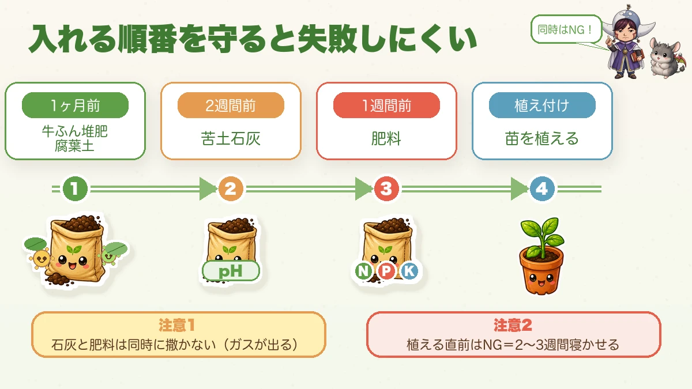

Building soil means feeding microbes 🌱 Compost, lime and fertiliser do three different jobs

🌱 "I'm feeding it properly and it still won't grow."
🌱 "Why does everything die so quickly?"
🌱 "Soil preparation sounds complicated."
Hello, I'm Eiko. Eight years of growing vegetables organically and without pesticides, and a teaching licence in science.
Honestly: whether your vegetables thrive is decided almost entirely by the soil. More than the transplants, more than the fertiliser. Skip this and you spend the season wondering why nothing grows — which is what I did for years.
But the theory makes the practice simple.
Building soil is really about growing microbes
This is the central idea.
I grow organically and use no synthetic fertiliser. So who delivers the nutrients to the plant? The microbes in the soil.
Organic fertiliser scattered on the ground is not something a plant can take up. Soil microbes have to break it down first, into a form the plant can absorb. They do the prep work, like a kitchen porter.
So organic soil preparation means growing the microbes before you grow the vegetables. Open, crumbly soil, well populated. That's the target.
Three materials, three different jobs
What this diagram says （図解の文字）
- The three things you add all do different jobs
- Compost — "improves the soil", "crumbly", "more microbes"
- Lime — "corrects acidity", "pH 6.0–6.5, slightly acid"
- Fertiliser — N / P / K — "the vegetables' food: nitrogen, phosphorus, potassium"
- "Same phrase, 'soil preparation' — entirely different functions"
① Compost — improves the soil
Well-rotted manure, leaf mould and the like. It makes the soil crumbly, improves both drainage and water-holding, lets air through, and increases the microbe population. It's what makes the soil liveable.
② Lime — corrects acidity
In a rainy climate, soil drifts steadily toward acid. Too acid and the roots are damaged and can't take nutrients up. Most vegetables want pH 6.0–6.5 — slightly acid — so lime brings it back. Dolomite lime (which includes magnesium) is a good default.
③ Fertiliser — the vegetables' food
Nitrogen, phosphorus, potassium and the rest. I use only organic sources — bokashi and poultry manure. Poultry manure is cheap and good, and relatively high in the potassium that strengthens roots.
The order they go in

What this diagram says （図解の文字）
- Follow the order and little goes wrong — "not at the same time!"
- "1 month before" — manure compost, leaf mould
- "2 weeks before" — dolomite lime
- "1 week before" — fertiliser
- "planting" — put the plants in
- Warning 1: "don't apply lime and fertiliser at the same time (it releases gas)"
- Warning 2: "never just before planting — leave it 2–3 weeks"
- Manure compost / leaf mould — a month before planting
- Dolomite lime — at least two weeks before
- Fertiliser (poultry manure, bokashi) — a week before
Two points:
Don't apply lime and fertiliser together. Together they release ammonia gas, which is bad for the plants and for the microbes. So you stagger them. (Gentler organic limes such as oyster shell can go on closer to planting.)
And the firm rule: never add anything immediately before planting. Organic materials need time for microbes to break them down. Plant straight after and you get damaged roots, gas, and a temporary nitrogen shortage in the soil. Leave it two to three weeks at minimum.
Doing it without spending money
What this diagram says （図解の文字）
- Crumbly soil for nothing — "everyday things will do"
- Fallen leaves — "in the bottom of the bed"
- Weeds and cut grass + rice bran — "bury them together and they become compost"
- Rice bran — "food for the microbes", "bury it and leave a month"
- Winter digging — "turn the soil in winter to deal with pests and disease"
Compost, generously
Especially on new or compacted ground. It becomes the microbes' housing. "Too much compost" is almost never the problem, so be generous at the start.
Leaves in the bottom of the bed
Dig the bed out 20–30 cm (8–12 in), lay fallen leaves in the bottom and cover with soil. Drainage improves immediately, and in time it becomes leaf mould. Broadleaf litter is best; avoid ginkgo, which barely rots.
Keep the weeds and grass clippings
Coat pulled weeds with rice bran and bury them: in about three months you have proper compost. The rubbish turns into an asset.
Rice bran is microbe food
Often free from a coin-operated rice mill. It feeds the microbes and the soil comes alive.
One caution: it can attract insects, so always dig it in rather than leaving it on the surface, and leave it a month or more before planting. If insects worry you, you can skip it — I'm cautious about it myself.
Winter digging to deal with pests
The most effective thing in a no-spray garden is winter soil work. In the coldest months, turn the soil over 20–30 cm and expose it to the cold: the clods break down and the soil goes crumbly, and the pathogens, pests and weed seeds in it are killed by frost. Not using chemicals, I'm genuinely grateful for this one.
Too much lime is also a problem
Too little is bad; too much causes its own disorders. Pushed too alkaline, the plant can't take up trace nutrients such as iron and the leaves go yellow.
Poultry manure contains calcium too, so "lots of lime plus lots of poultry manure" easily becomes an overdose.
If it worries you, a pH meter is inexpensive and worth having. But don't be anxious about it — "aim for slightly acid" is close enough to start.
If you grow in containers
Use a bought vegetable potting compost and the soil preparation is essentially done for you. That's plenty to begin with. And used compost can be brought back with rice bran and leaves.
To sum up
- ✅ Building soil = growing microbes. Organic nutrients reach the plant through them
- ✅ Compost improves, lime corrects, fertiliser feeds. Keep the jobs separate and keep the order
- ✅ Never add anything just before planting. Leave it two to three weeks
- ✅ Don't apply lime and fertiliser together — ammonia
- ✅ Leaves, weeds, rice bran and winter digging give you crumbly soil for nothing
- ✅ Too much lime turns the leaves yellow
Get the soil right and the vegetables are half grown already. And in a no-spray garden, the people who took care over this are the ones who actually harvest something. Start with the soil 🌱
Thank you for reading!